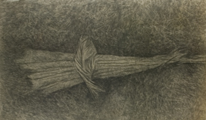

Cynthia McCauley Boos is an Arts professor that recieved a Master of Fine Arts Degree from the Parson's School of Design | New School University, in New York City. She went on to pursue teaching as an Instructor at Miami Dade College & Georgia Perimeter College, as well as a full time artist. She has a collection of works that include mixed media such as Drawing, Watercolor, Oil, Encaustic, and Photography.
Psalm 34:20 "For the LORD protects the bones of the righteous; not one of them is broken!"
John 19:34 “But one of the soldiers with a spear pierced his side, and forthwith came there out blood and water.”
Genesis 22:8 "And Abraham said, My son, God will provide himself a lamb for a burnt offering: so they went both of them together."
Exodus 4:2 "And the Lord said unto him, What is that in thine hand? And he said, A rod."
Kings 19:11-13 "11 And he said, Go forth, and stand upon the mount before the Lord. And, behold, the Lord passed by, and a great and strong wind rent the mountains, and brake in pieces the rocks before the Lord; but the Lord was not in the wind: and after the wind an earthquake; but the Lord was not in the earthquake: 12 And after the earthquake a fire; but the Lord was not in the fire: and after the fire a still small voice. 13 And it was so, when Elijah heard it, that he wrapped his face in his mantle, and went out, and stood in the entering in of the cave. And, behold, there came a voice unto him, and said, What doest thou here, Elijah?"
"...I have come to recognize the importance of committing to form, what I see during the time between sleep & wakefulness; mapping this deam space. I see it as my most natural sense & conection to the Earth." - Cynthia McCauley Boos
Made by Will Boos